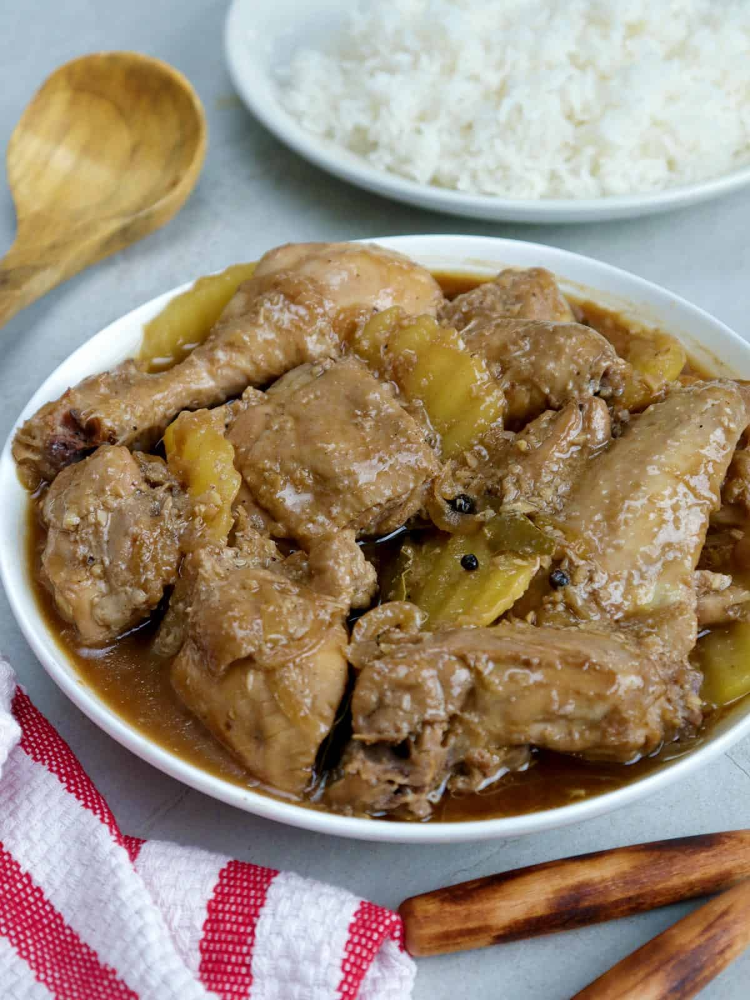

Adobong Manok/Chicken Adobo

Description
The national dish of the Philippines, it is a tangy and savory
chicken-based dish marinated in black peppers, vinegar, and soy sauce. It
is best served with warm white rice. My family's version includes boiled
potatoes for an even heartier meal.
Ingredients
- 1 kilo chicken, chopped into serving pieces
- 2 medium size potatoes, quartered
- 3 cloves of garlic, minced
- 1 medium size onion, chopped
- 1/2 cup water
- 1/4 cup vinegar
- 1/4 cup soy sauce
- 1 Knorr chicken cube
- 1 tsp. ground black pepper or whole black peppercorns
- 1 tsp. brown sugar
- 1 pc. laurel leaf
- 1 tbsp. cooking oil
- 1 tsp. salt or patis fish sauce, optional
- 1 tsp. MSG, optional
Cooking Steps
-
Heat oil in a saucepan and saute garlic and onion. After a minute add
the chicken.
- Stir fry the chicken until most of the liquid has evaporated.
-
Add in chicken cube, soy sauce, vinegar, sugar, laurel leaf, and black
pepper.
- Cover and simmer for 3 minutes then add the potatoes.
- Then add 1/2 cup of water and cover.
-
Simmer again for 15 minutes or until the potatoes and chicken are
cooked.
-
Season with MSG and patis or salt (just in case the adobo lacks salt).
- Serve hot, preferably with a side of warm steamed white rice.